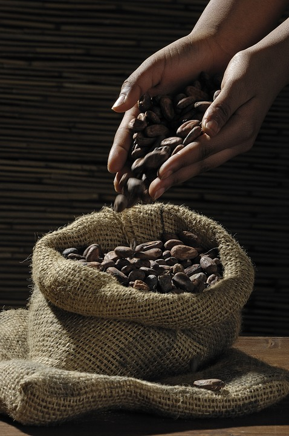

Cacao

Le cacao est la poudre obtenue après broyage de l'amande des fèves de cacao fermentées et torréfiées produites par le cacaoyer1. En fait, la valeur « poudre de cacao » n'est qu'une acception du terme cacao parmi d'autres, c'est le sens le plus fréquent pour un locuteur francophone moyen de l'hémisphère Nord, les autres valeurs ne se rencontrant que dans le vocabulaire de spécialité des locuteurs travaillant dans la filière cacao.
Une première série d'opérations effectuées dans les pays de production du cacao, permet de passer du fruit du cacaoyer aux fèves de cacao fermentées et séchées, qui une fois vendues aux quelques entreprises multinationales de l'industrie chocolatière, vont ensuite être torréfiées, concassées, triées pour séparer les fragments de coque et d'embryon, pour n'en garder que les cotylédons qui seuls donnent la pâte de cacao (ou masse de cacao) après broyage. Ce produit semi-fini subit un pressage pour séparer la partie grasse, ou beurre de cacao, de la matière sèche, ou tourteaux. La poudre de cacao s'obtient en broyant les tourteaux. La poudre de cacao sert à fabriquer une boisson énergisante, appréciée en hiver, nommée « chocolat chaud », fait avec du cacao en poudre, du lait et du sucre.
95 % de la production mondiale de cacao provient d'une agriculture familiale paysanne vivant de un à trois hectares de plantation de cacaoyers2. Plus de 5 millions de petits planteurs de cacao des régions tropicales, ont produit 5,2 millions de tonnes de fèves de cacao fermentées en 2017, qu'ils ont vendues à quelques multinationales de l'industrie chocolatière. Les fèves, arrivées dans les pays consommateurs, sont torréfiées, concassées et pressées afin d'élaborer du chocolat et autres confiseries chocolatées.
Chocolat chaud
Le chocolat chaud est une boisson chaude constituée de chocolat ou de cacao en poudre et de sucre additionné d'eau ou de lait. Il peut donc s'agir de lait au chocolat qui aurait été chauffé. Bien que le chocolat chaud soit généralement considéré comme bu pour le plaisir, des études récentes ont suggéré qu'il pourrait avoir quelques propriétés bénéfiques en raison des antioxydants contenus dans le cacao. Jusqu'au XIXe siècle, le chocolat chaud était même utilisé en médecine pour traiter des désagréments tels que les maux d'estomacs et pour apaiser les douleurs.
La première boisson au chocolat est généralement supposée avoir été créée par les Mayas il y a 2 000 ans, et une boisson au cacao faisait partie de la culture aztèque vers 1400. La boisson s'est popularisée en Europe après son introduction à partir du Mexique, et a subi de multiples adaptations depuis. Aujourd'hui, le chocolat chaud est consommé partout dans le monde et inclut de multiples variations, du cioccolata, très dense, en Italie, au chocolat chaud plus dilué typiquement consommé aux États-Unis.
Thé

Le thé est une boisson aromatique préparée par infusion des feuilles séchées du théier, un arbuste à feuilles persistantes originaire des piémonts orientaux de l'Himalaya (Assam, Yunnan, nord du Myanmar et de la Thaïlande).
Il y est consommé depuis l'Antiquité, puis s'est étendu au Japon et au monde arabe au IXe siècle et à l'Europe au XVIe siècle.
Le thé fut au XXe siècle la boisson la plus bue au monde après l'eau. Il peut prendre des formes très diverses, procurant une vaste gamme de boissons aromatiques, gustatives ou désaltérantes, obtenues par infusion ou percolation d'eau sur diverses préparations à partir des petites feuilles et des bourgeons du théier.
Ces diverses boissons aqueuses peuvent être obtenues à partir de feuilles simplement séchées ou diversement fermentées. Selon les traditions, les portions liquides sont bues chaudes, tièdes ou froides, en quantités très variables, diluées, faiblement ou fortement concentrées, et parfois additionnées de diverses matières d'origine végétale ou animale. L'importante variété de thés existant au monde s'explique par le grand nombre de terroirs, de cultivars, de modes de culture ainsi que par les traitements subis après la récolte. Ces facteurs déterminent le goût et la qualité du thé produit. Les thés obtenus sont différenciés par leur « couleur » : noirs, verts, Oolong, jaunes, blancs et post-fermentés.
Riche en épigallocatéchine, en gallate d'épigallocatéchine, en théanine et en caféine, le thé est à la fois recherché pour son goût, ses vertus énergisantes et relaxantes ainsi que pour ses effets positifs sur la santé dans le cas du thé vert.